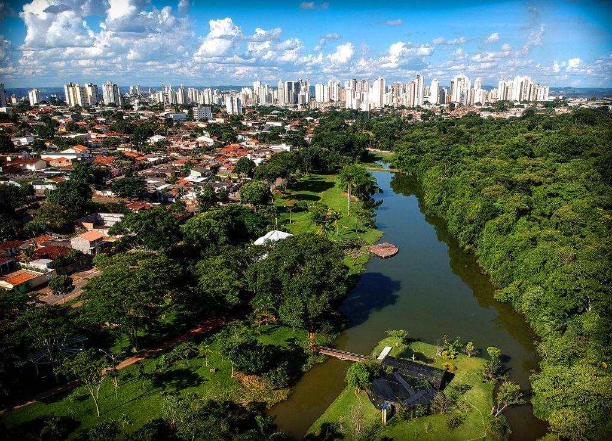

Goiás, com cerca de 7,3 milhões de habitantes, é um dos maiores estados do Centro-Oeste, com uma economia baseada no agronegócio, indústria e mineração. Em 2023, o PIB chegou a R$ 342 bilhões, impulsionado principalmente pela produção de soja, milho, carnes e pela indústria. O governador Ronaldo Caiado está no comando desde 2019 e tem investido em políticas para reduzir a desigualdade social, melhorar a educação e a saúde, aumentando a qualidade de vida da população. Goiás também é conhecido por sua forte produção agrícola e crescente setor de serviços.
